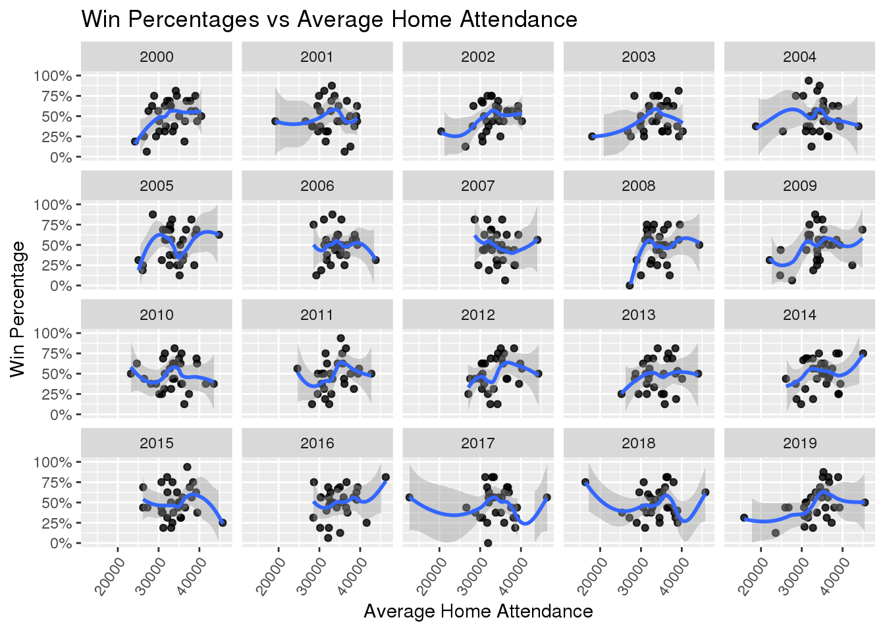

attendance50 <- readr::read_csv('https://raw.githubusercontent.com/rfordatascience/tidytuesday/master/data/2020/2020-02-04/attendance.csv')
standings <- readr::read_csv('https://raw.githubusercontent.com/rfordatascience/tidytuesday/master/data/2020/2020-02-04/standings.csv')
games <- readr::read_csv('https://raw.githubusercontent.com/rfordatascience/tidytuesday/master/data/2020/2020-02-04/games.csv')NFL Attendance
For this NFL Attendance project, I am using 3 proposed datasets coming from the Tidy Tuesday website to analyze NFL attendance and how it affects the NFL. The three datasets are filled with data coming from the source Pro Football Reference. The first dataset is attendance.csv and it consists of 10,846 observations and 8 different variables.
The variable team is used to represents the team’s city and the variable team_name is used to represent the team’s mascot. The variable year represents what year the data is from. The variable total shows the total attendance across 17 weeks with 1 week = no game. The variable home shows the home teams attendance for the game and the variable away shows the away team’s attendance. The variable week represents the week number for the season. Lastly the weekly_attendance variable shows the weekly attendance number.
The second dataset we used to analyze the affect of attendance on an NFL game is standings.csv. The dataset consists of 638 observations and 15 variables. The variables team and team_name still both represent the team’s city and the team’s mascot. The variable year represents the year. The variable wins represent the wins from 0 to 16 and the variable loss represent the losses from 0 to 16. The variables points_for and points_against represent the offensive and defensive performance by showing the points scored/the points scored on. The variable points_differential shows the point differential by performing (points_for – points_against). The variable margin_of_victory shows the margin of victory in a game by performing (Points Scored – Points Allowed)/ Games Played. The variable strength_of_schedule measures the Average quality of opponent measured by the SRS(Simple Rating System).. The variable simple_rating measures a team quality relative to average (0.0) by using the SRS “SRS = MoV + SoS = OSRS + DSRS”. The variables offensive_ranking and defensive_ranking measure a teams quality of offense or defense relative to the SRS(Simple Rating System).. The variable playoffs shows wether a team made the playoffs or not. The variable sb_winner shows if the team won the superbowl or not.
Question 1:
Was there a correlation between Home attendance and Win percentage in the 2000 NFL Season?
To find the correlation between Home attendance and Win percentage in the 2000 NFL season I created a graph of the average yearly attendance for each team and plotted it on the x-axis variable and on the y-axis variable I used the win percentage for the teams.
nfl_data <- dplyr::left_join(attendance50, standings, games, by = c("year", "team_name", "team"))
nfl_data = na.omit(nfl_data)
nfl_data_numeric <- mutate_all(nfl_data, function(x) as.numeric(as.character(x)))## Warning in (function (x) : NAs introduced by coercion## Warning in (function (x) : NAs introduced by coercion## Warning in (function (x) : NAs introduced by coercion## Warning in (function (x) : NAs introduced by coercionnfl_data_numeric['team'] = nfl_data['team']
nfl_data_numeric['team_name'] = nfl_data['team_name']
nfl_data_numeric['playoffs'] = nfl_data['playoffs']
nfl_data_numeric['sb_winner'] = nfl_data['sb_winner']
attendance = nfl_data_numeric[match(unique(nfl_data_numeric$home), nfl_data_numeric$home),]
attendance = subset(attendance, select = c(team_name, home, year, wins, loss))
attendance['win_percent'] = attendance['wins']/(attendance['wins']+attendance['loss'])
attendance2 <- filter(attendance, year == "2000")
ggplot(attendance2, aes(home, win_percent)) +
geom_smooth() +
labs(title = "Home Attendance Vs Win Percent (2000 NFL Season)", x = "Yearly Attendance", y = "Win Percentage" )## `geom_smooth()` using method = 'loess' and formula 'y ~ x'attendance2## # A tibble: 31 x 6
## team_name home year wins loss win_percent
## <chr> <dbl> <dbl> <dbl> <dbl> <dbl>
## 1 Cardinals 387475 2000 3 13 0.188
## 2 Falcons 422814 2000 4 12 0.25
## 3 Ravens 551695 2000 12 4 0.75
## 4 Bills 560695 2000 8 8 0.5
## 5 Panthers 583489 2000 7 9 0.438
## 6 Bears 535552 2000 5 11 0.312
## 7 Bengals 469992 2000 4 12 0.25
## 8 Browns 581544 2000 3 13 0.188
## 9 Cowboys 504360 2000 5 11 0.312
## 10 Broncos 604042 2000 11 5 0.688
## # … with 21 more rowsQuestion 2:
How does division affect attendance and win percentage in the American Football Conference?
The American Football conference is divided into four divisions and each of these divisions consists of four teams. I first needed to group the teams into their corresponding conferences and then join them into one data frame. I then printed the average attendance for each conference on a bar graph and on a separate bar graph I show the win percentages for each conference.
afc_west = dplyr::filter(nfl_data_numeric, team %in% c("Kansas City", "Oakland", "Denver", "San Diego"))
attendance = afc_west[match(unique(afc_west$home), afc_west$home),]
attendance = subset(attendance, select = c(team_name, home, wins, loss))
attendance <- aggregate(. ~ team_name, attendance, sum)
attendance['win_percent'] = attendance['wins']/(attendance['wins']+attendance['loss'])
afc_west <- attendance
afc_west## team_name home wins loss win_percent
## 1 Broncos 12159820 182 138 0.568750
## 2 Chargers 8605896 136 136 0.500000
## 3 Chiefs 11964694 166 154 0.518750
## 4 Raiders 8831829 125 195 0.390625afc_east = dplyr::filter(nfl_data_numeric, team_name %in% c("Bills", "Dolphins", "Patriots", "Jets"))
attendance = afc_east[match(unique(afc_east$home), afc_east$home),]
attendance = subset(attendance, select = c(team_name, home, wins, loss))
attendance <- aggregate(. ~ team_name, attendance, sum)
attendance['win_percent'] = attendance['wins']/(attendance['wins']+attendance['loss'])
afc_east <- attendance
afc_east## team_name home wins loss win_percent
## 1 Bills 10784670 137 183 0.4281250
## 2 Dolphins 10929713 149 171 0.4656250
## 3 Jets 11232265 133 155 0.4618056
## 4 Patriots 3191572 65 31 0.6770833afc_north = dplyr::filter(nfl_data_numeric, team %in% c("Pittsburgh", "Cleveland", "Baltimore", "Cincinnati"))
attendance = afc_north[match(unique(afc_north$home), afc_north$home),]
attendance = subset(attendance, select = c(team_name, home, wins, loss))
attendance <- aggregate(. ~ team_name, attendance, sum)
attendance['win_percent'] = attendance['wins']/(attendance['wins']+attendance['loss'])
afc_north <- attendance
afc_north## team_name home wins loss win_percent
## 1 Bengals 9527276 145 172 0.4574132
## 2 Browns 11114495 99 220 0.3103448
## 3 Ravens 11291595 190 130 0.5937500
## 4 Steelers 9918492 205 113 0.6446541afc_south = dplyr::filter(nfl_data_numeric, team %in% c("Tennessee", "Indianapolis", "Houston", "Jacksonville"))
attendance = afc_south[match(unique(afc_south$home), afc_south$home),]
attendance = subset(attendance, select = c(team_name, home, wins, loss))
attendance <- aggregate(. ~ team_name, attendance, sum)
attendance['win_percent'] = attendance['wins']/(attendance['wins']+attendance['loss'])
afc_south <- attendance
afc_south## team_name home wins loss win_percent
## 1 Colts 9855079 197 123 0.6156250
## 2 Jaguars 10054557 127 193 0.3968750
## 3 Texans 10237938 131 157 0.4548611
## 4 Titans 6429529 99 93 0.5156250afc_west_no_name = subset(afc_west, select = -c(team_name))
afc_west_avg = colMeans(afc_west_no_name)
#afc_west_avg
afc_east_no_name = subset(afc_east, select = -c(team_name))
afc_east_avg = colMeans(afc_east_no_name)
#afc_east_avg
afc_north_no_name = subset(afc_north, select = -c(team_name))
afc_north_avg = colMeans(afc_north_no_name)
#afc_north_avg
afc_south_no_name = subset(afc_south, select = -c(team_name))
afc_south_avg = colMeans(afc_south_no_name)
#afc_south_avg
total <- rbind(afc_west_avg, afc_east_avg, afc_north_avg, afc_south_avg)
total <- as.data.frame(total)
total['home'] = total['home']
total## home wins loss win_percent
## afc_west_avg 10390560 152.25 155.75 0.4945312
## afc_east_avg 9034555 121.00 135.00 0.5081597
## afc_north_avg 10462964 159.75 158.75 0.5015405
## afc_south_avg 9144276 138.50 141.50 0.4957465plot1 <- barplot(t(as.matrix(total['home'])), main = "Average Attendance Per AFC Divsion", names.arg=c("AFC West", "AFC East", "AFC North", "AFC South"), beside=TRUE)plot2 <- barplot(t(as.matrix(total['win_percent'])), ylim = c(0.2,0.55), main = "Win Percentage Per AFC Divsion", cex.axis=1.3, names.arg=c("AFC West", "AFC East", "AFC North", "AFC South"), beside=TRUE)Question 3:
How does NFL wide attendance change throughout the season?
NFL attendance fluctuates throughout the season and depending on the weekend it can have a large effect. The graph below presents the average game attendance each weekend through the years 2000 to 2019. This graph displays the average weekly attendance being its highest at the beginning and end of the season.
new_data <- subset(nfl_data_numeric, select = -c(team_name, playoffs, sb_winner, team) )
week_att = aggregate(. ~ week, new_data, sum)
week_att = subset(week_att, select = c(week, weekly_attendance))
week_att['weekly_attendance'] = week_att['weekly_attendance']/20/32
ggplot(week_att, aes(week, weekly_attendance)) +
geom_col() +
scale_x_continuous(breaks=c(1,2,3,4,5,6,7,8,9,10,11,12,13,14,15,16,17)) +
labs(title = "Average NFL Game Attendance, Per Week",
x = "Week",
y = "Weekly Attendance")